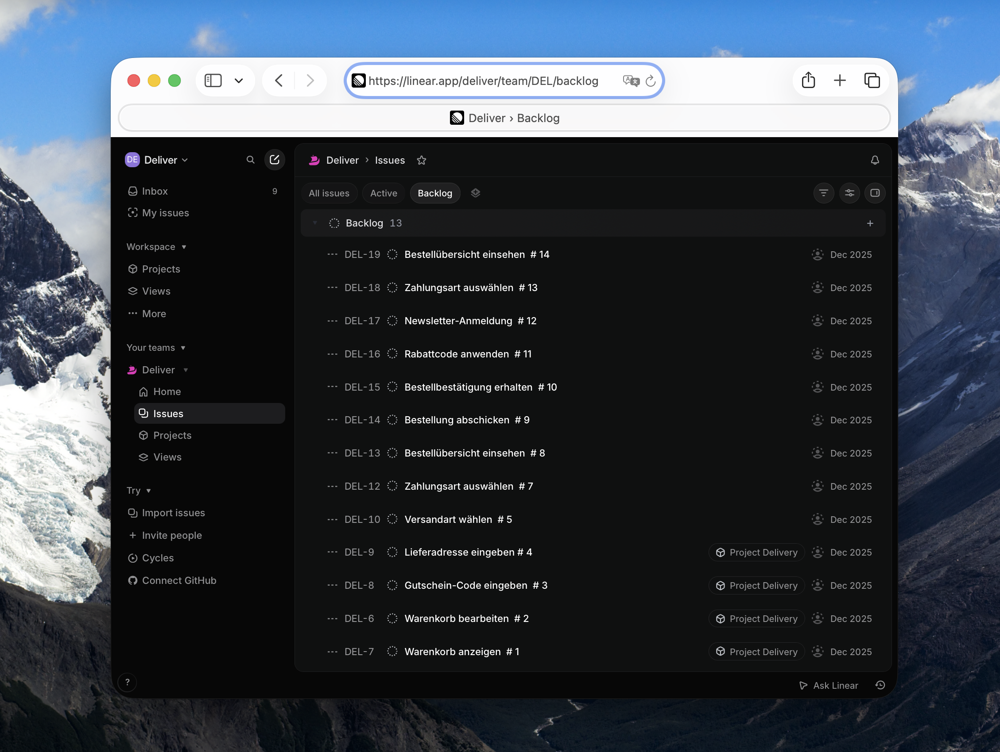
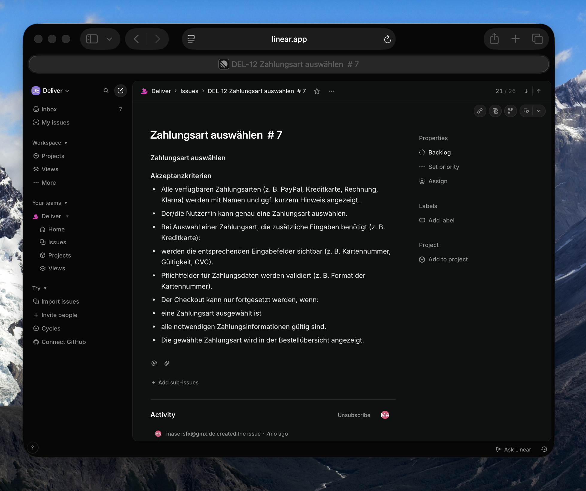
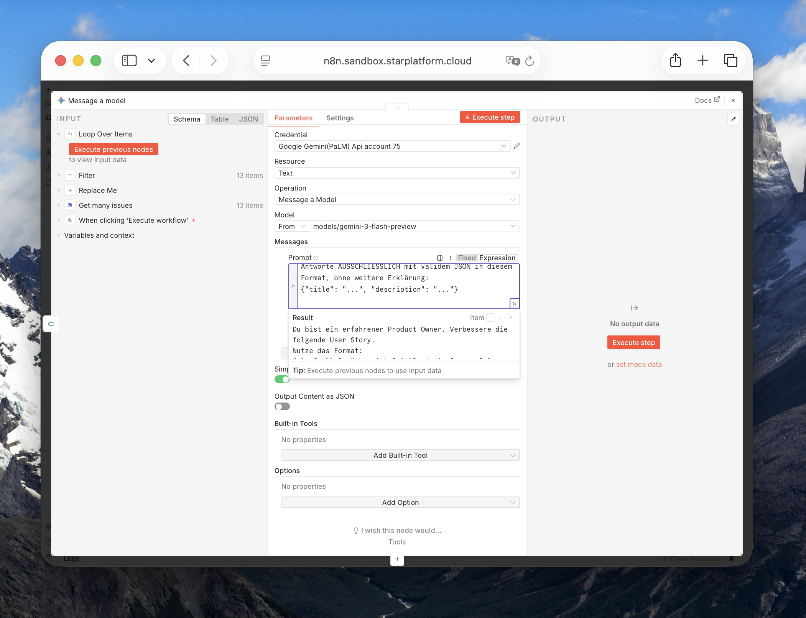

Backlog Autopilot
n8n-Workflow verbessert automatisch rohe Linear-Tickets zu vollständigen User Stories
Backlogs sind oft schneller befüllt als sauber ausformuliert: Ein Ticket wie „Warenkorb anzeigen" hält die Idee fest, reicht aber nicht zur Bearbeitung – kein User-Story-Format, keine Akzeptanzkriterien.
Ende 2025 habe ich dazu einen n8n-Workflow gebaut, vor allem um mit n8n selbst rumzuspielen: Backlog aus Linear ziehen, jedes Ticket durch ein LLM schicken, verbesserte Version zurückschreiben. Kleiner Case, guter Einstieg. Mittlerweile macht Rovo in Jira genau das per Default – n8n als Automatisierungsplattform bleibt aber spannend, die Möglichkeiten sind fast unendlich.
Ein starker Case könnte zum Beispiel sein: echte Wissenssynthese statt Ticket-Kosmetik. n8n aggregiert Daten aus Jira, Slack, Teams, Git – ein lokales Open-Source-LLM (z.B. Llama via Ollama) analysiert sie auf eigener Infrastruktur. Sensible Daten verlassen das Unternehmen nie.
Denkbar ist ein KI-gestützter Status auf Knopfdruck: Statt für jede Abstimmung ein Meeting aufzusetzen, holen sich Teammitglieder bei Bedarf den aktuellen Stand – das Daily bleibt, aber Zwischen-Syncs entfallen. Oder ein Refinement-Briefing, das Kontext aus Wiki, alten Tickets und Slack zusammenzieht, damit der PO auf Basis von Fakten priorisiert statt auf Bauchgefühl – bessere Entscheidungen, weniger teure Fehlentwicklungen.
n8n orchestriert die Quellen, das lokale LLM übernimmt das Denken – datenschutzkonform.

Der Ausgangs-Backlog
13 Tickets im Linear Backlog des Beispielprojekts „Deliver" der Inhalt von unterschiedlicher Qualität.

Ein Ticket im Rohzustand
Beispiel DEL-7 „Warenkorb anzeigen": keine Struktur keine Testkriterien.

Der Prompt
Für jedes Ticket schickt der Workflow Titel und Kontext an Gemini, mit fester Rollenanweisung „Du bist ein erfahrener Product Owner. Verbessere die folgende User Story. Formuliere Rolle, Ziel, Nutzen. Überarbeite die ACs und ergänze 3 Testkriterien."

Der neue Backlog
Nach dem Lauf ist der Backlog von 13 auf 26 Tickets gewachsen: Jedes Original bekommt eine „AI Verbessert"-Version, statt einfach überschrieben zu werden.

Vorher/Nachher am Beispiel
Aus „Warenkorb anzeigen" wird eine vollständige User Story im „Als Nutzer möchte ich..."-Format ACs überarbeitet mit Testkriterien.

Der Workflow im Überblick
Get many issues holt alle Tickets aus Linear, Filter behält nur den Backlog. Loop Over Items geht sie einzeln durch: Jedes landet bei Message a model, wo Gemini mit dem Product-Owner-Prompt eine verbesserte Version erzeugt. Code in JavaScript parst die JSON-Antwort, Create an issue legt daraus das neue „AI Verbessert"-Ticket in Linear an – Original bleibt unangetastet.